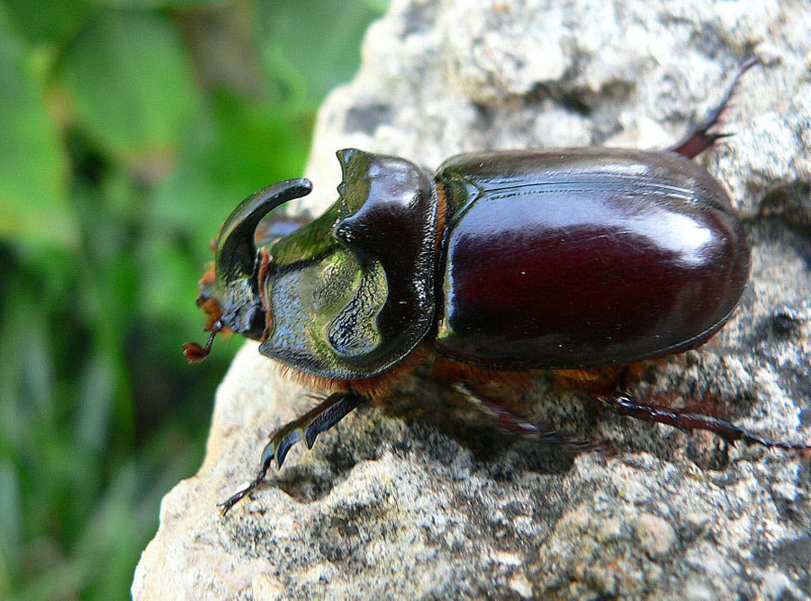

INSERT-HOUSE
bettles are insects that come from order Corleoptera, in the superorder.Their front pair pair of wings are hardened into wing-cases,elytra,distinguishing them from most other insects
WHERE WILL YOU FIND IT
Bettles have lived on Earth for about 300 million years and can be found almost everywhere,from deserts to lakes, rainforests to polar ice capa. Most bettles live on land. They turnel underground, or in wood,or in the carcasses of animals